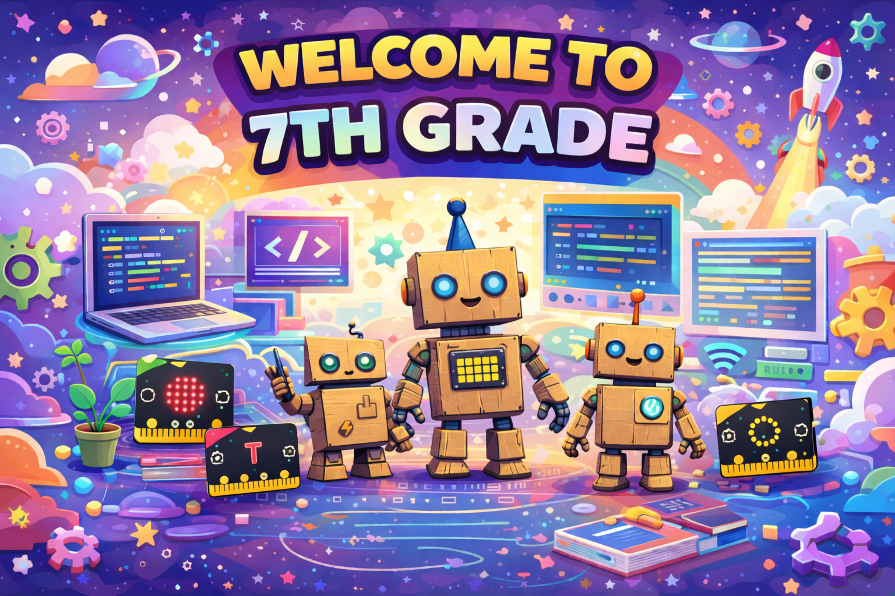

Overview
In 7th grade Technology Class, students will build a strong foundation in computer science and hands-on technology through coding, physical computing, problem-solving, and creative projects. Throughout the course, students will explore how technology can be used to design solutions, create projects, and solve real-world problems.

What Students Will Learn
Students will learn Python using CodeHS. CodeHS is a widely used online computer science platform that provides web-based lessons, coding practice, projects, video tutorials, and teacher tools to support computer science instruction. It helps students build coding, computational thinking, and problem-solving skills through guided practice and interactive activities.
Students will also learn physical computing through the Project Lead The Way (PLTW) curriculum and micro:bits. PLTW is a widely used hands-on STEM program that helps students build problem-solving and real-world technology skills through project-based learning. A micro:bit is a small programmable computer made for students. It allows them to write code that works with buttons, lights, sensors, and other inputs and outputs, helping them understand how software and hardware work together.
The course will culminate in a cardboard robot project, where students will apply their coding and design skills to create a working robot using recycled materials and micro:bit technology. Learn more about cardboard robots here.